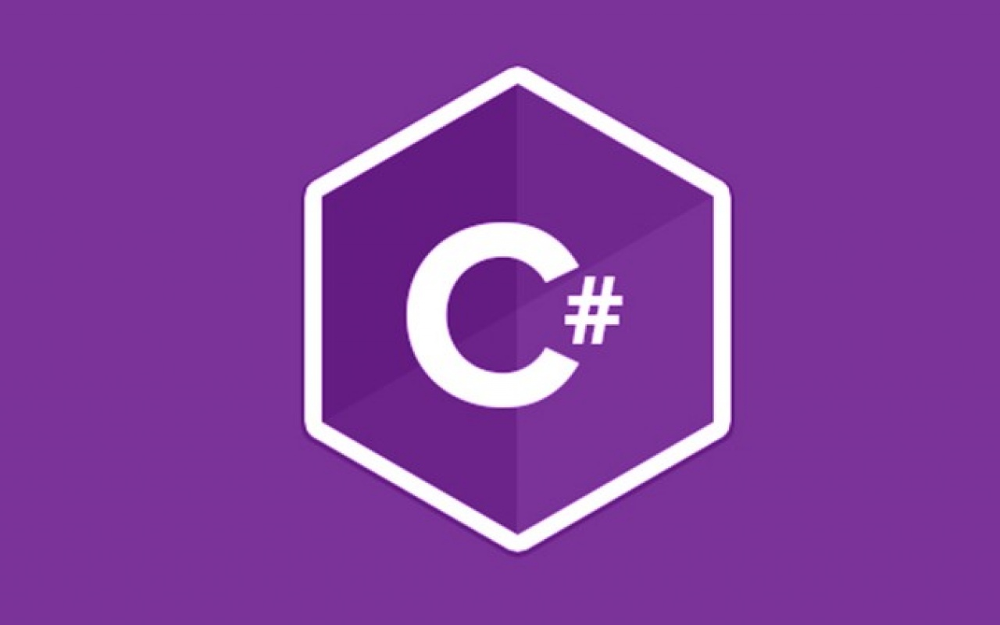

C# (произносится си-шарп) — объектно-ориентированный язык программирования.
Разработан в 1998—2001 годах группой инженеров под руководством Андерса
Хейлсберга в компании Microsoft как язык разработки приложений для
платформы Microsoft .NET Framework и впоследствии был стандартизирован.
C# относится к семье языков с C-подобным синтаксисом, из них его синтаксис
наиболее близок к C++ и Java. Язык имеет статическую типизацию,
поддерживает полиморфизм, перегрузку операторов (в том числе операторов явного
и неявного приведения типа), делегаты,
атрибуты, события, свойства, обобщённые типы и методы, итераторы, «анонимные»
функции с поддержкой замыканий, LINQ, исключения,комментарии в формате XML.